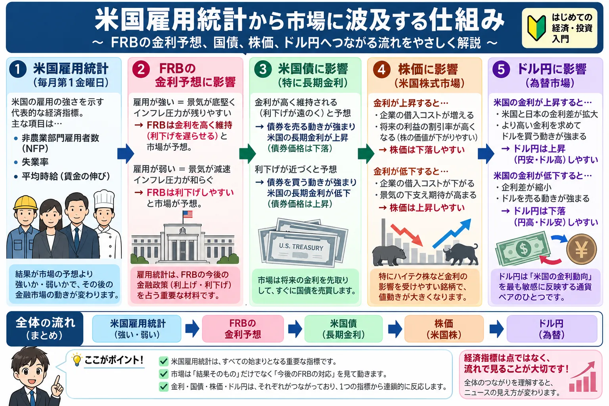

話題・トレンド
米国雇用統計とは？なぜ「雇用が強い」と株価が下がることがあるの？初心者向けに解説
米国雇用統計は、世界の金融市場で特に注目される経済指標の一つです。 ニュースでは「雇用者数が予想を上回った」「失業率が低下した」といった数字が報じられますが、 一見すると良いニュースなのに株価が下落することもあります。
その理由を理解するポイントは、 雇用統計そのものだけでなく、FRBの金融政策や金利予想までつなげて考えることです。 この記事では、非農業部門雇用者数・失業率・平均時給の基本から、 株価・米国債・ドル円へ影響が広がる仕組みまで初心者向けに整理します。

- 米国雇用統計は米国の雇用・賃金の状態を見る重要な経済指標
- 非農業部門雇用者数・失業率・平均時給が特に注目される
- 重要なのは「良い数字か悪い数字か」だけでなく市場予想との差
- 強い雇用統計はFRBの利下げ期待を後退させ、金利上昇につながることがある
- その結果として株安・ドル高が起こる場合がある
米国雇用統計とは？
一般に金融ニュースで「米国雇用統計」と呼ばれているものは、 米労働省労働統計局（BLS）が原則として毎月公表する Employment Situation（雇用情勢）を指します。
米国でどれくらい雇用が増えているのか、失業者がどれくらいいるのか、 賃金がどの程度上昇しているのかなどを確認できるため、 米国景気の状態を判断する重要な材料として世界中の投資家から注目されています。
米国は世界最大規模の経済を持ち、FRBの金融政策は米国株だけでなく、 米国債・為替・日本株を含む世界の市場へ大きな影響を与えることがあります。 そのため、雇用統計の発表直後には市場が大きく動くことも珍しくありません。
米国雇用統計で初心者がまず見る3つの指標
雇用統計には多くのデータが含まれていますが、 初心者はまず次の3つを押さえておくとニュースを理解しやすくなります。
① 非農業部門雇用者数
農業部門を除く事業所で働く人が前月からどれだけ増減したかを見る指標です。 英語ではNonfarm Payrollsと呼ばれ、NFPと略されることもあります。
市場では特に注目度が高く、 「雇用統計が強かった・弱かった」と表現するときの中心になる数字の一つです。
② 失業率
労働力人口のうち、仕事を探している失業者がどの程度いるかを示す割合です。
一般には低いほど雇用環境が強いと考えられますが、 労働参加率など他の指標と合わせて見ることも重要です。
③ 平均時給
労働者の賃金がどの程度増えているかを見る指標です。
賃金上昇は家計の購買力を支える一方、 強すぎる賃金上昇はサービス価格などのインフレ圧力につながる可能性もあるため、 FRBの政策判断を考えるうえで重要視されます。
なぜFRBは雇用統計を重視するの？
FRB（米連邦準備制度）は、米国の中央銀行にあたる組織です。 金融政策では最大雇用と物価の安定が重要な目標となっています。
そのためFRBは、CPIやPCEデフレーターなどの物価指標だけでなく、 雇用者数・失業率・賃金など労働市場のデータも確認しながら政策を判断します。
雇用と金融政策の基本的な考え方
雇用が非常に強く、賃金や需要も強い状態が続くと、 インフレが再び強まる可能性が意識されます。 その場合、市場では「FRBが利下げを急がないのではないか」 「高い金利が長く続くのではないか」と予想されることがあります。
反対に雇用が緩やかに弱まり、インフレも落ち着いている場合には、 金融政策を緩和しやすくなるとの見方が強まることがあります。
FRBの政策そのものについては FOMCとは？初心者向けに解説や タカ派・ハト派とは？ もあわせて読むと理解しやすくなります。
なぜ「雇用が強い」と株価が下がることがあるの？
投資初心者が特に混乱しやすいのが、 「雇用が増えたのに株価が下がる」という動きです。
景気だけを考えれば、雇用が増えることは通常プラス材料です。 働く人が増えれば所得が増え、消費や企業業績を支える可能性があります。
しかし金融市場は、現在の景気だけでなく その数字を受けてFRBが今後どう動くかまで先回りして考えます。
金利が上昇すると、株式の将来利益を現在価値に換算したときの評価が低くなりやすく、 特に将来の成長期待を大きく織り込んでいるグロース株やハイテク株では 株価の重荷になる場合があります。
また、国債利回りが上昇すると、 投資家にとって債券の魅力が相対的に高まり、 株式から資金が移る可能性もあります。
雇用が弱いと株価が上がることもある理由
反対に、雇用統計が市場予想より少し弱かったにもかかわらず、 株価が上昇することもあります。
これは雇用の緩やかな減速によって、 「景気が過熱しすぎていない」 「FRBが利下げしやすくなる」 と投資家が考えるためです。
ただし、雇用が急激に悪化した場合は話が変わります。 失業率が急上昇するなど景気後退への警戒が強まれば、 利下げ期待よりも企業業績悪化への不安が大きくなり、 株価が下落することがあります。
適度な雇用の減速
インフレ沈静化や利下げ期待につながり、 株式市場に好意的に受け止められることがあります。
急激な雇用悪化
景気後退や企業利益の減少が警戒され、 株式市場にマイナスとなることがあります。
雇用統計は「良い・悪い」より市場予想との差が重要
経済指標を見るときに初心者が覚えておきたいのが、 市場は発表された数字だけでなく、事前予想との差に反応するという点です。
例えば雇用者数が10万人増えていても、 市場が20万人増を予想していたのであれば「予想より弱い」と評価されます。 一方、市場予想が5万人増だったところ実際には10万人増えれば、 同じ10万人でも「強い」と受け止められる可能性があります。
| 市場予想 | 実際の結果 | 一般的な受け止め方 |
|---|---|---|
| 雇用者数 +5万人 | +15万人 | 予想より強い |
| 雇用者数 +20万人 | +15万人 | 増加していても予想より弱い |
| 失業率 4.2% | 4.0% | 予想より雇用環境が強い可能性 |
そのためニュースを見るときは、 「何万人増えたか」だけでなく 市場予想はいくつだったのかまで確認することが重要です。
前月分の「改定」にも注意
米国雇用統計では、過去に発表された雇用者数が後から改定されることがあります。
例えば今月の数字が強くても、 前月・前々月分が大きく下方修正されていれば、 労働市場全体としては最初に考えたほど強くなかった可能性があります。
逆に、最新値がそれほど強くなくても、 過去分が大幅に上方修正されれば市場の評価が変わる場合があります。
- 今回の非農業部門雇用者数
- 市場予想との差
- 失業率
- 平均時給
- 前月・前々月分の改定
米国雇用統計と米国債・金利の関係
雇用統計の結果は、米国債市場にも大きな影響を与えることがあります。
雇用が市場予想より強く、 FRBが高い政策金利を長期間維持するとの見方が強まると、 特に金融政策の予想を反映しやすい短期国債の利回りが上昇することがあります。
長期金利も、景気・インフレ・財政・国債需給など複数の要因を反映しながら動きます。 金利上昇が株式市場へ影響する仕組みについては 債券市場とは？なぜ国債売りで株価まで下がるの？ で詳しく解説しています。
国債価格と金利の基本関係は 国債とは？国債が売られるとなぜ金利が上がるの？ も参考にしてください。
米国雇用統計はドル円にも影響する
雇用統計発表後には、ドル円など為替相場も大きく動くことがあります。
強い雇用統計によって米国の利下げ期待が後退し、 米国金利が上昇すると、 ドルが買われやすくなる場合があります。
ただしドル円は米国だけで決まるわけではありません。 日銀の金融政策、日本の金利、物価、政治情勢、リスク回避の動きなども影響します。
円安そのものについては 円安とは？初心者向けに解説 で基本から整理しています。
米国雇用統計は日本株にも影響する？
米国雇用統計は米国の指標ですが、日本株にも間接的に影響することがあります。
例えば強い雇用統計によって米国株が下落すると、 翌営業日の日本株にもリスク回避の流れが波及する場合があります。
一方で、雇用統計を受けてドル高・円安が進んだ場合には、 輸出企業の業績期待などを通じて一部の日本株を支える可能性もあります。
つまり日本株への影響も一方向ではなく、 米国株・米国金利・ドル円の動きを組み合わせて考えることが大切です。
株価がさまざまな材料で動く基本的な仕組みは 株価はなぜ上がったり下がったりするの？ も参考になります。
「Good News is Bad News」とは？
金融ニュースでは、ときどき 「Good News is Bad News（良いニュースが悪いニュースになる）」 という表現が使われます。
雇用統計が強いこと自体は経済にとって良いニュースでも、 その結果として金融引き締めが長期化し、 金利上昇が株価を圧迫すると考えられれば、 株式市場にとっては悪材料になることがあります。
逆に、やや弱い経済指標が利下げ期待につながることで、 株式市場では好材料と受け止められる場合もあります。
直近の米国雇用統計｜2026年8月分
2026年9月4日に米労働省労働統計局（BLS）が公表した 2026年8月分の雇用統計では、 非農業部門雇用者数が前月比16万2,000人増となりました。
民間非農業部門の平均時給は37.75ドルとなり、 前月から0.10ドル、0.3%上昇しました。 前年同月比では3.1%の上昇です。
また過去分については、 6月の雇用者数が2万人増から3万1,000人増へ、 7月が2万3,000人減から2万1,000人増へ改定され、 2か月合計では従来公表値より5万5,000人上方修正されました。
市場予想を大きく上回る雇用増加となったことで、 発表後はFRBが早期に金融緩和へ向かうとの期待が後退し、 米国債利回りが上昇しました。 ドルも上昇する一方、米国株は下落しました。
| 市場 | 発表後の主な動き | 背景 |
|---|---|---|
| 米2年国債利回り | 約4.37%へ上昇 | FRBの政策金利見通しを反映しやすい短期金利が上昇 |
| 米10年国債利回り | 約4.78%へ上昇 | 強い景気・金利高止まりへの警戒 |
| ドル指数 | 約0.21%上昇 | 米金利上昇を受けたドル買い |
| ドル円 | 約156.19円 | ドル高・円安方向へ |
| S&P500 | 約0.38%下落 | 利下げ期待後退と金利上昇 |
| NASDAQ | 約0.29%下落 | 高金利への警戒 |
| NYダウ | 約0.51%下落 | 金利上昇への警戒 |
この動きは、 「雇用が強いこと自体は景気にとって良いが、金融市場では金利上昇が意識されて株価には逆風になることがある」 という典型例の一つです。
- 米労働省労働統計局（BLS） 「The Employment Situation — August 2026」
- Reuters 「US nonfarm payrolls surge in August, unemployment rate steady at 4.1%」
初心者が米国雇用統計を見るときのチェックポイント
雇用統計では大量の数字が発表されますが、 初心者がすべてを追いかける必要はありません。 まずは次の順番で確認すると整理しやすくなります。
- 非農業部門雇用者数：雇用が増えたか減ったか
- 市場予想との差：予想より強かったか弱かったか
- 失業率：労働市場が悪化していないか
- 平均時給：賃金インフレが強まっていないか
- FRBの金利予想：発表後に利下げ・利上げ予想がどう変化したか
そのうえで米国債利回り、ドル円、米国株の反応を見ると、 なぜ市場がその方向へ動いたのかを理解しやすくなります。
「数字が良いから株を買う」「悪いから売る」と単純に判断するのではなく、 数字 → FRB予想 → 金利 → 株価・為替 という流れを意識することが大切です。
雇用統計と一緒に覚えたい経済指標
FRBは雇用だけで金融政策を決めているわけではありません。 物価や景気を示す複数のデータを確認しながら判断します。
米国雇用統計と金利・株価をあわせて学ぶ
米国雇用統計で初心者が注意したいこと
雇用統計の発表直後は、株式・為替・債券が短時間で大きく動くことがあります。 最初の反応と、その後の値動きが逆になるケースもあります。
例えば非農業部門雇用者数だけを見て市場が反応した後、 失業率や平均時給、過去分の改定が確認され、 投資家の評価が変わることもあります。
長期投資や積立投資を行っている場合も、 毎月の雇用統計だけを理由に投資方針を大きく変更する必要があるとは限りません。 分散や資金管理を意識しながら、長期的な視点で考えることが重要です。
よくある質問
米国雇用統計とは何ですか？
米国の雇用状況を示す統計です。 特に米労働省労働統計局（BLS）が原則毎月公表するEmployment Situationが注目され、 非農業部門雇用者数・失業率・平均時給などが市場で重要視されています。
なぜ雇用が強いと株価が下がることがあるのですか？
雇用が強いことでFRBの利下げ期待が後退し、 米国金利が上昇する場合があるためです。 金利上昇は株式の評価や資金の流れに影響し、 株価の下押し要因になることがあります。
雇用統計では何を見ればいいですか？
初心者は非農業部門雇用者数、失業率、平均時給、 市場予想との差、過去分の改定を確認すると全体像をつかみやすくなります。
雇用が弱ければ株価は必ず上がりますか？
必ずではありません。 適度な雇用の減速は利下げ期待につながることがありますが、 急激な悪化は景気後退への警戒を強め、株価下落につながる可能性があります。
米国雇用統計はドル円にも影響しますか？
影響することがあります。 強い雇用統計によって米国金利が上昇すると、 ドル高・円安方向に動く場合があります。 ただし日銀の金融政策など他の要因にも左右されます。
まとめ｜雇用統計は「FRBと金利」までつなげて見る
米国雇用統計は、米国の労働市場の状態を確認する重要な経済指標です。 非農業部門雇用者数、失業率、平均時給などが特に注目されています。
初心者が覚えておきたいのは、 雇用が強いから株価が必ず上がるわけではないという点です。
雇用が予想以上に強いと、 FRBの利下げ期待が後退し、 米国債利回りの上昇を通じて株価が下落することがあります。 反対に適度な雇用の減速が利下げ期待につながり、 株価を支えることもあります。
毎月のニュースを見るときは数字だけを見るのではなく、 「この結果でFRBの金融政策予想がどう変わったのか」 まで確認すると、市場の値動きを理解しやすくなります。
投資の基本をさらに学びたい方へ
投資ポータル.jpでは、株式・金利・為替・経済指標などを 投資初心者向けにできるだけ分かりやすく整理しています。
投資コラム一覧を見る免責事項
当記事は、投資・経済・金融に関する一般的な情報提供および学習を目的としたものであり、 特定の金融商品の売買や投資判断を推奨するものではありません。 市場環境や経済指標は変化するため、実際の投資判断はご自身の責任で行ってください。